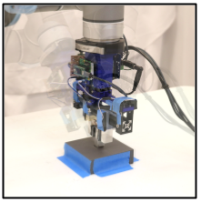
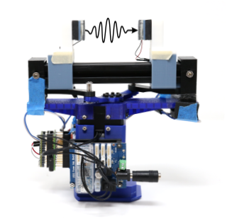
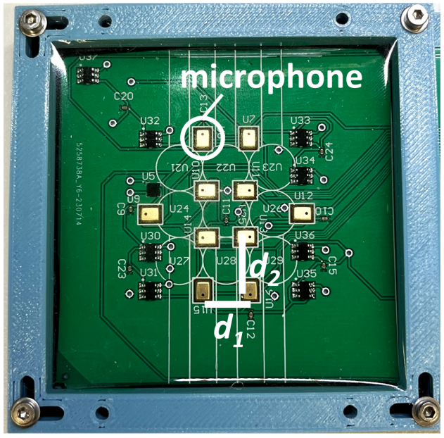
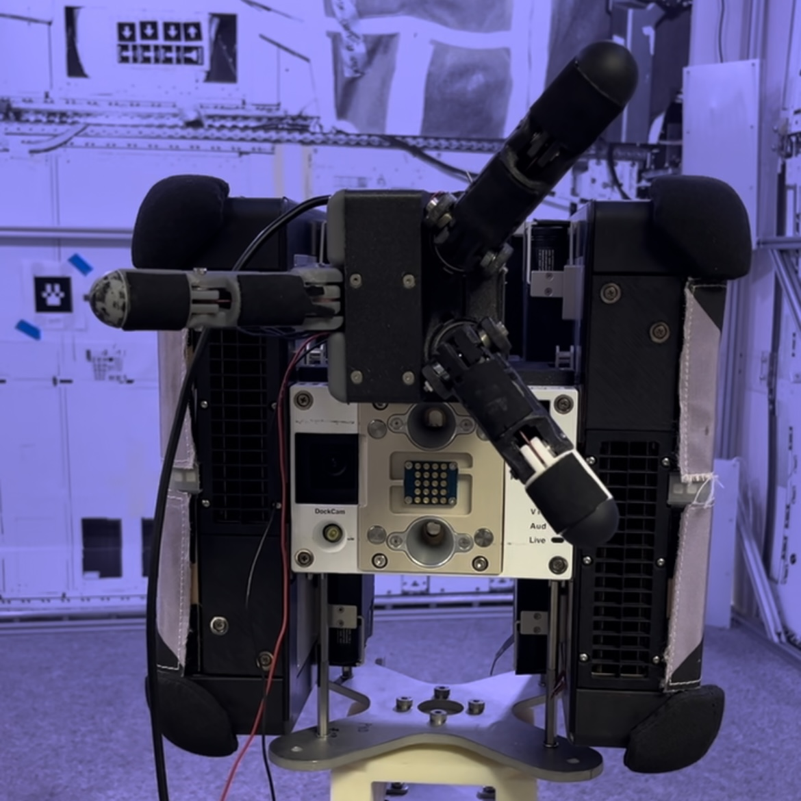
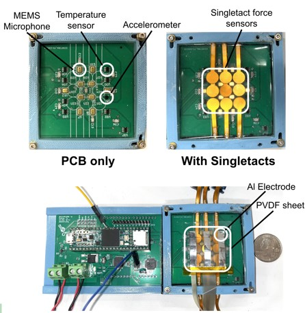
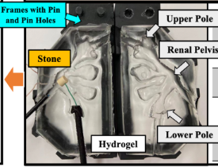
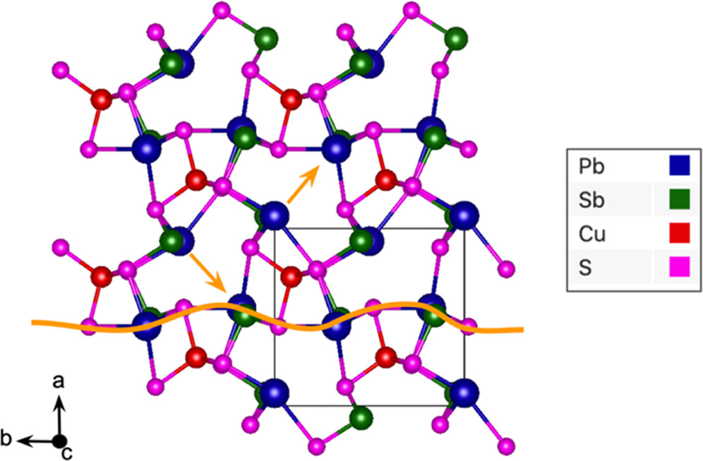
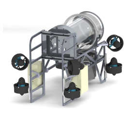

|
I'm a phd student in the ROAM Lab at Columbia, advised by Matei Ciocarlie, where I work on building tactile sensors for dexterous manipulation. I am also a NASA NSTGRO fellow, and I work with Trey Smith and Brian Coltin at NASA Ames. Before Columbia, I majored in mechanical engineering and computer science at Duke, where I worked in the Mitzi Research Group on the development of new, sustainable materials for thin-film photovoltaics. CV | LinkedIn | Twitter | Google Scholar email: eric (dot) chang (at) columbia (dot) edu |

|
ResearchI work on building touch sensors to (hopefully) help robots be more dexterous! I'm most interested in developing compact, multimodal tactile fingers, studying new methods of tactile sensing, and exploring how to process rich, multimodal touch data in the context of manipulation. |
|
|
SpikeATac: A Multimodal Tactile Finger with Taxelized Dynamic Sensing for Dexterous Manipulation
Eric T. Chang*, Peter Ballentine*, Zhanpeng He*, Do-Gon Kim, Kai Zhang, Hua-Hsuan Liang, Joaquin Palacios, William Wang, Pedro Piacenza, Ioannis Kymissis, Matei Ciocarlie *joint first authorship under review |
|


|
VibeCheck: Using Active Acoustic Tactile Sensing for Contact-Rich Manipulation
Kaidi Zhang*, Do-Gon Kim*, Eric T. Chang*, Hua-Hsuan Liang, Zhanpeng He, Kathryn Lampo, Philippe Wu, Ioannis Kymissis, Matei Ciocarlie *equal contribution IROS, 2025 |
|
|
R×R: Rapid eXploration for Reinforcement Learning via Sampling-based Reset Distributions and Imitation Pre-training
Gagan Khandate*, Tristan Luca Saidi*, Siqi Shang*, Eric T. Chang, Yang Liu, Seth Dennis, Johnson Adams, Matei Ciocarlie *equal contribution Autonomous Robots, 2024 (RSS 2023 Special Issue) arXiv / Springer Link |
|


|
An Investigation of Multi-feature Extraction and Super-resolution with Fast Microphone Arrays
Eric T. Chang*, Runsheng Wang*, Peter Ballentine, Jingxi Xu, Trey Smith, Brian Coltin, Ioannis Kymissis, Matei Ciocarlie *equal contribution ICRA, 2024 arXiv / IEEE Xplore |


|
Spike-a-Tac: Development Towards a PVDF-based Tactile Finger with Distributed Vibration Sensing
Eric T. Chang*, Peter Ballentine*, Ioannis Kymissis, Matei Ciocarlie *equal contribution ICRA 2024 ViTac Workshop: Robot Embodiment through Visuo-Tactile Perception workshop paper / workshop poster
|
|
|
Sampling Based Exploration for Reinforcement Learning of Dexterous Manipulation
Gagan Khandate*, Siqi Shang*, Eric T. Chang, Tristan Luca Saidi, Johnson Adams, Matei Ciocarlie *equal contribution Robotics: Science and Systems, 2023 arXiv / Project Website / Video1 / Video2 Press: Tech Xplore, Popular Science, Time |
|

|
Building underactuated hands for NASA's Astrobee
During my internship at NASA Ames (as part of the NSTGRO program), I worked on improving the design of a 3-fingered, underactuated hand for Astrobee, a free-flyer robot on the ISS. This work built off of previous work from our lab on underactuated hands. My goal (ongoing) is to integrate our tactile sensors into this hand for use on Astrobee! See below for photos of our current design of the hand in action on Astrobee at NASA Ames. (+) Photos ▼ |
|  |
Towards Development of a Signal-Dense Multimodal Tactile Finger
Eric T. Chang, Peter Ballentine, Ioannis Kymissis, Matei Ciocarlie ICRA 2023 ViTac Workshop: Blending Virtual and Real Visuo-Tactile Perception workshop paper |

|
Phase Stability, Bandgap Tuning and Rashba Splitting in Selenium-Alloyed Bournonite
Eric T. Chang*, Gabrielle Koknat*, Garrett Mckeown Wessler, Yi Yao, Volker Blum, David B. Mitzi *equal contribution Chemistry of Materials, 2023, 35, 2, 595–608 paper |
|  |
Development of an Optically Transparent Kidney Model for Laser Lithotripsy Research
Sabrina Tran, Junqin Chen, Gunnar Kozel, Eric Chang, Trina Phung, Yanxi Peng, Zachary Dionise, Yuan Wu, W. Neal Simmons, Michael E. Lipkin, Glenn M. Preminger, Pei Zhong BJU International, 2023, 132, 1, 36-39 paper |
|  |
Synthesis and Characterization of Selenium-Alloyed Bournonite CuPbSb(S1-xSex)3: a Prospective Semiconductor for Optoelectronic Applications
Eric T. Chang, Gabrielle Koknat, Volker Blum, David B. Mitzi MRS Spring Meeting, 2021 Best poster award, 2nd place Symposium award |
|  |
CTHULHU: The Design and Implementation of Duke Robotics Club's 2019/2020/2021 AUVSI Competition Entry
Duke Robotics Club RoboSub Competition Technical Design Report, 2019/2020/2021 2019 paper / 2020 paper / 2021 paper Placed 4th/1st (2020/2021) in technical design report at competition |
|
|